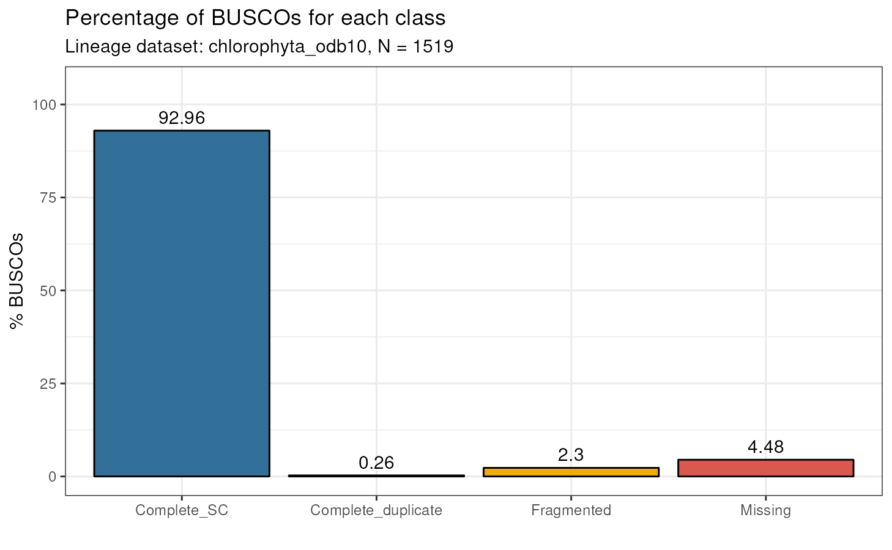
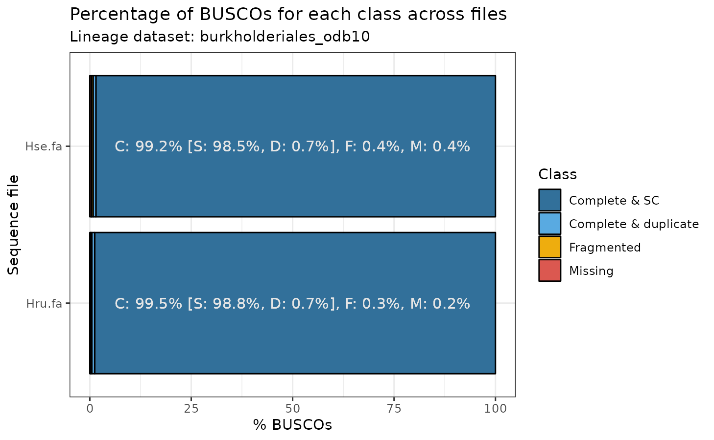

vignettes/vignette_01_assessing_genome_assembly.Rmd
vignette_01_assessing_genome_assembly.RmdOne of the most common metrics to assess the quality of genome assemblies is BUSCO (best universal single-copy orthologs) (Simão et al. 2015). cogeqc allows users to run BUSCO from an R session and visualize results graphically. BUSCO summary statistics will help you assess which assemblies have high quality based on the percentage of complete BUSCOs.
if(!requireNamespace('BiocManager', quietly = TRUE))
install.packages('BiocManager')
BiocManager::install("cogeqc")To run BUSCO from R, you will use the function run_busco()1. Here, we will use an example FASTA file containing the first 1,000 lines of the Herbaspirilllum seropedicae SmR1 genome (GCA_000143225), which was downloaded from Ensembl Bacteria. We will run BUSCO using burkholderiales_odb10 as the lineage dataset. To view all available datasets, run list_busco_datasets().
# Path to FASTA file
sequence <- system.file("extdata", "Hse_subset.fa", package = "cogeqc")
# Path to directory where BUSCO datasets will be stored
download_path <- paste0(tempdir(), "/datasets")
# Run BUSCO if it is installed
if(busco_is_installed()) {
run_busco(sequence, outlabel = "Hse", mode = "genome",
lineage = "burkholderiales_odb10",
outpath = tempdir(), download_path = download_path)
}The output will be stored in the directory specified in outpath. You can read and parse BUSCO’s output with the function read_busco(). For example, let’s read the output of a BUSCO run using the genome of the green algae Ostreococcus tauri. The output directory is /extdata.
# Path to output directory
output_dir <- system.file("extdata", package = "cogeqc")
busco_summary <- read_busco(output_dir)
busco_summary
#> Class Frequency Lineage
#> 1 Complete_SC 1412 chlorophyta_odb10
#> 2 Complete_duplicate 4 chlorophyta_odb10
#> 3 Fragmented 35 chlorophyta_odb10
#> 4 Missing 68 chlorophyta_odb10This is an example output for a BUSCO run with a single FASTA file. You can also specify a directory containing multiple FASTA files in the sequence argument of run_busco(). This way, BUSCO will be run in batch mode. Let’s see what the output of BUSCO in batch mode looks like:
data(batch_summary)
batch_summary
#> Class Frequency Lineage File
#> 1 Complete_SC 98.5 burkholderiales_odb10 Hse.fa
#> 2 Complete_SC 98.8 burkholderiales_odb10 Hru.fa
#> 3 Complete_duplicate 0.7 burkholderiales_odb10 Hse.fa
#> 4 Complete_duplicate 0.7 burkholderiales_odb10 Hru.fa
#> 5 Fragmented 0.4 burkholderiales_odb10 Hse.fa
#> 6 Fragmented 0.3 burkholderiales_odb10 Hru.fa
#> 7 Missing 0.4 burkholderiales_odb10 Hse.fa
#> 8 Missing 0.2 burkholderiales_odb10 Hru.faThe only difference between this data frame and the previous one is the column File, which contains information on the FASTA file. The example dataset batch_summary contains the output of run_busco() using a directory containing two genomes (Herbaspirillum seropedicae SmR1 and Herbaspirillum rubrisubalbicans M1) as parameter to the sequence argument.
After using run_busco() and parsing its output with read_busco(), users can visualize summary statistics with plot_busco().
# Single FASTA file - Ostreococcus tauri
plot_busco(busco_summary)
# Batch mode - Herbaspirillum seropedicae and H. rubrisubalbicans
plot_busco(batch_summary)
We usually consider genomes with >90% of complete BUSCOs as having high quality. Thus, we can conclude that the three genomes analyzed here are high-quality genomes.
This document was created under the following conditions:
sessionInfo()
#> R version 4.1.1 (2021-08-10)
#> Platform: x86_64-pc-linux-gnu (64-bit)
#> Running under: Ubuntu 20.04.3 LTS
#>
#> Matrix products: default
#> BLAS/LAPACK: /usr/lib/x86_64-linux-gnu/openblas-pthread/libopenblasp-r0.3.8.so
#>
#> locale:
#> [1] LC_CTYPE=en_US.UTF-8 LC_NUMERIC=C
#> [3] LC_TIME=en_US.UTF-8 LC_COLLATE=en_US.UTF-8
#> [5] LC_MONETARY=en_US.UTF-8 LC_MESSAGES=C
#> [7] LC_PAPER=en_US.UTF-8 LC_NAME=C
#> [9] LC_ADDRESS=C LC_TELEPHONE=C
#> [11] LC_MEASUREMENT=en_US.UTF-8 LC_IDENTIFICATION=C
#>
#> attached base packages:
#> [1] stats graphics grDevices utils datasets methods base
#>
#> other attached packages:
#> [1] cogeqc_0.99.0 BiocStyle_2.20.2
#>
#> loaded via a namespace (and not attached):
#> [1] Rcpp_1.0.8 ape_5.6-2 lattice_0.20-45
#> [4] tidyr_1.2.0 png_0.1-7 rprojroot_2.0.2
#> [7] digest_0.6.29 utf8_1.2.2 plyr_1.8.6
#> [10] R6_2.5.1 Herper_1.2.0 evaluate_0.15
#> [13] highr_0.9 ggplot2_3.3.5 pillar_1.7.0
#> [16] ggfun_0.0.5 yulab.utils_0.0.4 rlang_1.0.2
#> [19] lazyeval_0.2.2 jquerylib_0.1.4 Matrix_1.4-0
#> [22] reticulate_1.24 rmarkdown_2.13 pkgdown_2.0.2
#> [25] labeling_0.4.2 textshaping_0.3.6 desc_1.4.1
#> [28] stringr_1.4.0 igraph_1.2.11 munsell_0.5.0
#> [31] compiler_4.1.1 xfun_0.30 pkgconfig_2.0.3
#> [34] systemfonts_1.0.4 gridGraphics_0.5-1 htmltools_0.5.2
#> [37] tidyselect_1.1.2 tibble_3.1.6 bookdown_0.24
#> [40] fansi_1.0.2 crayon_1.5.0 dplyr_1.0.8
#> [43] withr_2.5.0 grid_4.1.1 nlme_3.1-155
#> [46] jsonlite_1.8.0 gtable_0.3.0 lifecycle_1.0.1
#> [49] magrittr_2.0.2 scales_1.1.1 tidytree_0.3.9
#> [52] cli_3.2.0 stringi_1.7.6 cachem_1.0.6
#> [55] farver_2.1.0 reshape2_1.4.4 fs_1.5.2
#> [58] ggtree_3.0.4 bslib_0.3.1 ellipsis_0.3.2
#> [61] ragg_1.2.2 generics_0.1.2 vctrs_0.3.8
#> [64] rjson_0.2.21 treeio_1.16.2 tools_4.1.1
#> [67] ggplotify_0.1.0 glue_1.6.2 purrr_0.3.4
#> [70] parallel_4.1.1 fastmap_1.1.0 yaml_2.3.5
#> [73] colorspace_2.0-3 BiocManager_1.30.16 aplot_0.1.2
#> [76] memoise_2.0.1 knitr_1.37 patchwork_1.1.1
#> [79] sass_0.4.0NOTE: You must have BUSCO installed in your machine to use run_busco(). If you don’t already have it, please refer to the vignette A note on reproducibility to learn how to easily install BUSCO in a miniconda environment and use it with run_busco(), or install it manually.↩︎